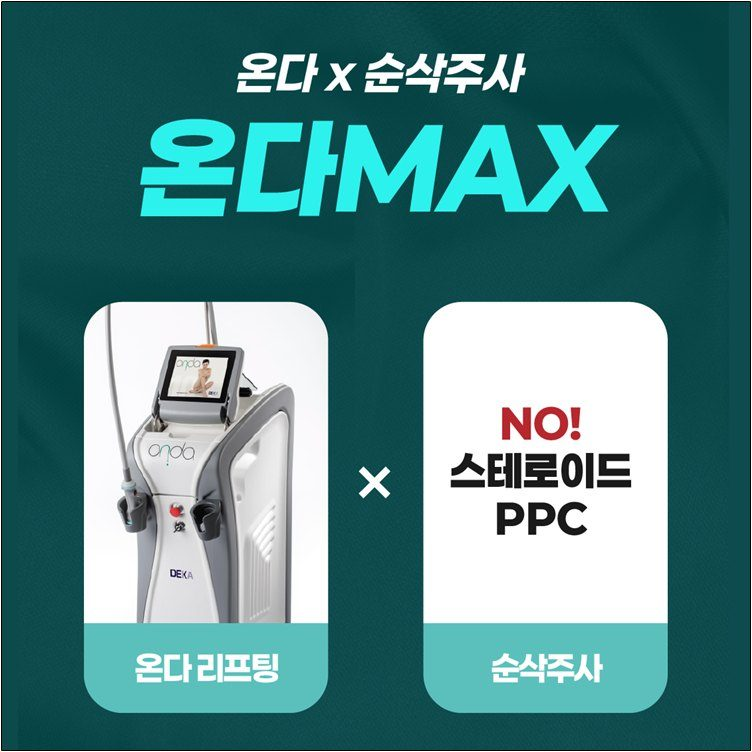

痛みの負担なく、顔とボディのラインを整えたい方へ
運動や食事だけでは限界を感じる部位があります。Reyeonk Clinicでは12月の1か月間、オンダリフティングにスンサク注射を加えたオンダMAXのイベントを行います。オンダリフティングの効果と価格、オンダMAXとはどんな施術か、施術後の注意点、よくあるご質問17件をまとめました。

イベント価格と期間は変更になる場合があります。ご来院前にお電話またはKakaoTalkでご確認ください。
オンダMAXは、オンダリフティングとスンサク注射（脂肪分解注射）を一緒に行う複合施術です。
オンダリフティングがマイクロ波エネルギーで脂肪の減少と肌のハリ改善を担い、スンサク注射が不要な脂肪細胞をもう一度整えて、よりすっきりとハリのある顔・ボディラインを目指します。
オンダリフティングは、マイクロ波エネルギーを皮膚の深い層まで届けて不要な脂肪を整え、コラーゲン生成を促すことで、たるんだ肌のハリ改善を目指す非外科的な施術です。
施術中は少し温かく感じる程度で、個人差はありますが、多くの方がすぐに日常生活に戻れます。施術後にむくみ、つっぱり感、かゆみ、筋肉の重い感じ、表情の違和感が出ることがまれにありますが、ほとんどは一時的です。
スンサク注射は、Reyeonk Clinicがこれまでの経験をもとに、脂肪分解に用いる薬剤を高濃度で混合し、少ない量で行う脂肪分解注射です。量が少ないため、あざやむくみの負担が少ない傾向があり、ステロイドとPPCは使用していません。
スンサク注射の詳細は、二重あごスンサク注射のご案内ページ（韓国語）でご確認いただけます。
ジュール数が多ければよいというわけではありません。脂肪量が多くない場合にエネルギーを過剰に加えることはおすすめしておらず、一部にエネルギーが集中すると、左右差や凹凸が出ることがあります。
そのためイベントは8万ジュールを基本構成としていますが、実際のジュール数とエネルギーは、ご相談で脂肪量、肌の状態、顔・ボディのラインを確認したうえで、院長が決定します。
熱刺激を与える施術のため、施術後2日ほどは冷たい刺激を避けます。
施術後の肌は刺激に敏感になることがあります。
スクラブやピーリングなどの角質ケアは、1週間ほどお休みいただくことをおすすめします。
脂肪をむやみに減らすのではなく、ご自身の顔やボディのラインを先に確認してデザインすることが大切です。Reyeonk Clinicでは、16年以上の脂肪形成の経験を持つ医療スタッフが直接ご相談を受け、ラインを考慮して丁寧に進めます。
Reyeonk Clinicは予約制で運営しているため待ち時間がなく、中国語・日本語・英語の相談スタッフとコーディネーターが在籍しており、言葉の不安なくご相談いただけます。
Reyeonk Clinicは外国人患者誘致医療機関として登録されています（登録番号 M-2022-01-08-6785）。
Reyeonk Clinicは、2009年の開院以来、着実な治療経験と症例を積み重ねてきました。
チェ・ヒョンホ院長のほか、他の院長も1対1の担当医として、ご相談から施術、仕上げまで直接責任を持って担当します。
あなただけの“ひと味違い”をご体験ください。
元 メイピュア医院（메이퓨어의원）院長 · 元 トーンズ医院（톤즈의원）院長
大韓レーザー皮膚毛髪学会（대한레이저피부모발학회）正会員 · 大韓美容形成レーザー医学会（대한미용성형레이저의학회）正会員 · 大韓肥満美容学会（대한비만미용학회）正会員 · 大韓フィラー学会（대한필러학회）準会員
元 メイピュア医院（메이퓨어의원）院長 · 元 ジェイリン医院（제이린의원）院長 · 元 ミミサム医院（미미썸의원）院長
AestheFill APAC Expert (2026) · SHENB Virtue RF Key-doctor · Restylane Kysse™ MASTER · SOMA (Thermage) Certification of Training Advanced Course 修了 · Atiere Key-doctor
大韓レーザー皮膚毛髪学会（대한레이저피부모발학회）正会員 · 大韓美容形成レーザー医学会（대한미용성형레이저의학회）正会員 · 大韓肥満美容学会（대한비만미용학회）正会員 · 大韓フィラー学会（대한필러학회）正会員
大韓美容外科学会（KACS）（대한미용외과학회）学術理事 · スンサク注射（순삭주사）の開発および特許
Cynergy MPX Key Doctor · Harvest Jet 2 (Body Jet EVO) Training Doctor · Smartlipo TPX · Cellulaze Asia Training Doctor
詳しいご紹介は医療スタッフのページでご覧いただけます。
マイクロ波エネルギーを使用し、皮下脂肪層と真皮層に働きかけます。
RFとHIFUは、それぞれコラーゲンの刺激、集束エネルギーに特化した方式です。オンダは、皮膚表面のダメージを抑えながら脂肪層に働きかける点が特長です。
顔とボディの両方に可能です。部位に応じて3mmまたは7mmのハンドピースを選ぶか、組み合わせて使用します。
スマートクーリングで不快感を和らげるため、通常は麻酔なしで行います。痛みに敏感な方には麻酔クリームを使用できます。
脂肪細胞の大きさを小さくし、一部を死滅させる仕組みです。脂肪吸引に比べると変化の幅は小さいものの、二重あごなどでの助けが期待できます。結果には個人差があります。
併用できます。組み合わせと順序は、ご相談のうえ肌の状態に合わせて決めます。
死滅した脂肪細胞は再生しませんが、体重の変化や加齢によってラインが再び変わることがあります。そのため、2～3か月ごとの再施術をおすすめしています。
麻酔なしで行える程度とご案内しています。エネルギーが高い場面では不快に感じることがあるため、院長が反応を見ながらリアルタイムで調整します。
皮膚表面のダメージが少ないため可能ですが、重度の活動性ニキビや炎症がある場合は、施術を延期することをおすすめします。
可能です。2～3か月ごとのメンテナンスをおすすめしています。
部位や範囲によって異なり、正確な金額は院長との相談後にご案内します。12月イベントとして、オンダリフティング8万ジュール＋顔スンサク注射は58万ウォン（VAT別）、ミントリフティング＋オンダリフティング＋顔スンサク注射は148万ウォン（VAT別）です。
オンダはマイクロ波、インモードは高周波（RF）を使う機器です。オンダは皮膚表面への刺激を抑えることが特長です。
個人差はありますが、通常は4～5か月ほどとご案内しています。継続的なケアと再施術が助けになります。
可能です。わずかなむくみが出ることがありますが、ほとんどは早く落ち着きます。
脂肪とハリの改善を同時に望む方、ダウンタイムなしで受けたい方、皮膚表面の刺激に敏感な方におすすめしています。
脂肪細胞が体から徐々に排出されるまでの過程が必要なため、数日で判断するのは早すぎます。変化は徐々に現れ、個人差があります。
部位と肌の状態に合わせて決めます。通常、顔は約100kJ、男性の顔は約120kJ、ボディは約150kJ前後をご案内しており、今回のイベントは8万ジュール（80kJ）構成です。最終的なエネルギーは、ご相談で院長が決定します。
ご自身に合うジュール数が気になる方へ。
オンダMAXがご自身のラインに合うか、何ジュールが適切かは、ご相談で現在の状態を確認したうえでご案内します。
※ 本記事は一般的な情報提供を目的としたものです。施術の効果や回復の速さには個人差があります。リスクや副作用、施術が適しているかどうかは、医療スタッフにご相談ください。